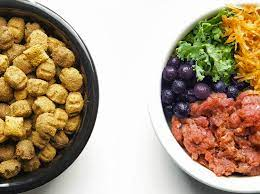

Dog-Pédia
Entenda mais sobre seu aumigo!
Saúde
Alimentação
Dicas
Saúde
Saiba mais sobre a Coprofagia - ato canino de comer fezes.
Como estimular seu cão à beber água e preservar sua saúde renal.
Cães Hipoalergênicos - Entenda.
Alimentação
Veja quais frutas seu cão pode comer.

Ração X Alimentos naturais: qual o melhor?
Cães são carnívoros?
 Como estimular seu cão à beber água e preservar sua saúde renal.
Como estimular seu cão à beber água e preservar sua saúde renal.
 Cães Hipoalergênicos - Entenda.
Cães Hipoalergênicos - Entenda.